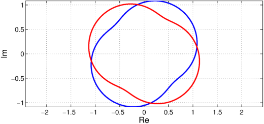
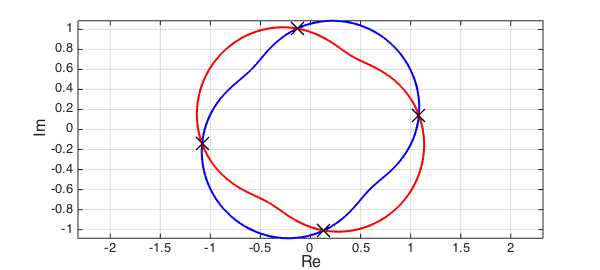

function BivariateRoots()
LW = 'LineWidth'; lw = 2; MS = 'MarkerSize'; FS = 'FontSize'; fs = 16;
Suppose $f(x,y)$ and $g(x,y)$ are bivariate polynomials and we are interested in finding the common roots $(x_\ast,y_\ast)$ for which $f(x_\ast,y_\ast)=g(x_\ast,y_\ast)=0$. This problem arises for example when locating the critical points of a surface $z = h(x,y)$ since the critical points satisfy $$(f(x,y)=)\ \frac{\partial z}{\partial x} = 0 ,\quad (g(x,y)=)\ \frac{\partial z}{\partial y}= 0. $$
One way to do this [2, 3] is to form the Bezout matrix. Given two polynomials $f(x)$ and $g(x)$, the Bezoutian is defined as the bivariate polynomial $$ B(x,z) = \frac{f(x)g(z)-g(x)f(z)}{x-z}. $$ It is often helpful to expand $B(x,z)$ into a bivariate Chebyshev expansion [3], $$ B(x,y) = \sum_{i,j} a_{i,j}T_{i-1}(x)T_{j-1}(y), $$ where $T_i(x)$ is the ith Chebyshev polynomial (other polynomial bases can be used). The matrix $A = (a_{ij})$ is called the (generalised) Bezout matrix because it is generated from the Bezoutian.
A well known fact [1] is that the matrix $A$ is singular if and only if the two polynomials $p(x)$ and $q(x)$ have a common root. We take advantage of this property in the following way. Regard $f(x,y)$ and $g(x,y)$ as univariate polynomials in $x$, with coefficients in $y$. Then we can form the Bezout matrix $A(y)$, whose elements are now seen as functions of $y$. A value $y_\ast$ such that $A(y_\ast)$ is singular indicates $f(x,y_\ast)$ and $g(x,y_\ast)$ have at least one common root $x_\ast$ and hence, $f(x_\ast,y_\ast)=g(x_\ast,y_\ast)=0$.
Let's illustrate bivariate rootfinding with an example. Suppose we want to find the intersections of the two curves $u_1(x) + iv_1(x)$ and $u_2(y) + iv_2(y)$. We can write this as the following bivariate rootfinding problem:
$$ f(x,y) = u_1(x) - u_2(y),\quad g(x,y) = v_1(x) - v_2(y). $$
(The curves we selected were obtained by modifying curves from Example complex/RoucheTheorem.m)
c1 = chebfun(@(x) sin(exp(1i*pi*x))*exp(-1i*pi/4),[-1 1]); % blue curve
c2 = chebfun(@(y) sin(exp(1i*pi*y))*exp(1i*pi/3),[-1 1]); % red curve
plot(c1,'b-',LW,lw), hold on, plot(c2,'r-',LW,lw),
xlabel('Re',FS,fs), ylabel('Im',FS,fs), grid on, axis equal

The goal is to find the four intersections of the red and blue curves. To use the Bezoutian approach, we first approximate the curves by complex valued chebfuns. To keep the computation of a manageable size we need to set the maximum degree $n$ to a few dozen, as the complexity of what follows is $O(n^6)$.
n = 25; u1 = chebfun(real(c1),n); v1 = chebfun(imag(c1),n); u2 = chebfun(real(c2),n); v2 = chebfun(imag(c2),n);
The first step is to consider the Bezoutian and form the Bezout matrix. For convenience we first represent the bivariate polynomials $f(x,y)$ and $g(x,y)$ as matrices of coefficients in their bivariate expansions, as we did above.
F = zeros(n); G = zeros(n); F(end,:) = chebpoly(u1); F(:,end) = F(:,end) - chebpoly(u2)'; G(end,:) = chebpoly(v1); G(:,end) = G(:,end) - chebpoly(v2)';
Now we form the Bezoutian of $f(x,y)$ and $g(x,y)$ (seen as polynomials in $x$) by using the code DLP.m, available from [4]. The code forms a linearization $\lambda X+Y$ for a given matrix polynomial, and in [4] it is shown that $X$ is a Bezout matrix. We use this to construct the Bezout matrix $A$ corresponding to the Bezoutian of $f(x,y)$ and $g(x,y)$.
A = zeros(n-1,n-1,2*n-1);
a = [ones(n-1,1); 2]/2; b = zeros(n,1); c = ones(n,1)/2; % Cheb 3 term
for i = 1:n
for j = 1:n
AA = [0 F(end-i+1,:)]; v = G(end-j+1,:)';
[X,ignored] = DLP(AA,v,a,b,c);
% Exact multiplication of T_iT_j = .5*(T_{i+j} + T_{|i-j|}).
if i == 1 || j==1, cc = zeros(max(i,j),1); cc(1)=1;
else
cc = zeros(i+j-1,1); cc(end)=.5; cc(abs(i-j)+1)=.5; cc = flipud(cc);
end
for k = 1:length(cc)
A(:,:,end-k+1) = A(:,:,end-k+1) + X(2:end,2:end)*cc(end-k+1);
end
end
end
% A may have many zero coefficients, remove them
nrmA = norm(A(:,:,end),'fro');
for ii=1:size(A,3)
if norm(A(:,:,ii),'fro')/nrmA>1e-20, break; end
end
A = A(:,:,ii:end);
$A(y)$ is the Bezout matrix (in the code $A(:,:,i)$ is the $i$-th leading coefficient matrix in the Chebyshev basis), and we want to find the values of $y$ such that $A(y)$ is singular. This reduces to a polynomial eigenvalue problem of size $n\times n$ and degree $n$.
The standard way to solve a polynomial eigenvalue problem is via linearization followed by the solution of the corresponding generalized eigenvalue problem.
A popular linearization is the colleague form (a generalization of the colleague matrix).
The code DLP.m gives block symmetric linearizations, and we will use this. This forms a generalized eigenvalue problem $\lambda X+Y$ whose eigenvalues match those of $B(y)$.
ns =size(A); AA = reshape(A,ns(1),ns(2)*ns(3)); n = ns(1); v = randn(n,1); a = [ones(n-1,1); 2]/2; b = zeros(n,1); c = ones(n,1)/2; [X,Y] = DLP(AA,v,a,b,c); [V,yvals] = eig(Y,-X); % solve generalized eigenvalue problem
The computed matrix yvals contains the $y$-values corresponding to the intersecting points, that is $(u2(yval),v2(yval))$. To get the $x$-values, we use the important but not so well known fact that if the Bezoutian has a null space, then it is of the Vandermonde form $[T_{n-1}(x),\ldots, T_2(x),T_1(x),T_0(x)]^T$. We extract the 'correct' computed roots by finding the solution in the region of interest $x,y\in [-1,1]$.
y = diag(yvals)'; x = V(end-1,:)./V(end,:); t = x; x = x(imag(y)==0 & abs(y)<1 & abs(x)<1); y = y(imag(y)==0 & abs(y)<1 & abs(t)<1);
Let's plot the computed roots and check the error:
plot(c2(y),'xk',MS,16) errors = abs(c2(y)-c1(x))
errors = 1.0e-04 * Columns 1 through 3 0.034925098616973 0.145821048303069 0.444399974676835 Column 4 0.145861116513781

References:
[1] D. S. Bernstein, Matrix Mathematics: Theory, Facts, and Formulas, Princeton University Press, 2nd edition, 2009.
[2] D. A. Bini and A. Marco. Computing curve intersection by means of simultaneous iterations. Numerical Algorithms, 43(2):151-175, 2006.
[3] D. Manocha and J. Demmel. Algorithms for intersecting parametric and algebraic curves I: simple intersections. ACM Transactions on Graphics, 13(1):73-100, 1994.
[4] A. Townsend, V. Noferini, and Y. Nakatsukasa. Vector spaces of linearizations for matrix polynomials: a bivariate polynomial approach. Preprint: The Mathematical Institute, University of Oxford, Eprints Archive 1638 (2012).
end
function [X, Y, M] = DLP(AA, v, a, b, c)
%DLP constructs the DL pencil with ansatz vector v.
%
% [X,Y] = DLP(AA,V,A,B,C) returns the DL pencil with the orthogonal
% basis defined by the recurrence relations A,B,C.
[n,m] = size(AA); k=m/n-1; s=n*k; % matrix size and degree
M = spdiags([a b c],[0 1 2],k,k+1); M = kron(M,eye(n)); % multiplication matrix
S = kron(v,AA);
for j=0:k-1, jj=n*j+1:n*j+n; AA(:,jj) = AA(:,jj)';end % block transpose
T = kron(v',AA'); R = M'*S-T*M; % construct RHS
% Bartels-Stewart algorithm on M'Y+YM=R, M is upper triangular.
X = zeros(s); Y=X; ii=n+1:s+n; nn=1:n; % useful indices
Y(nn,:)=R(nn,ii)/M(1); X(nn,:)=T(nn,:)/M(1); % first column of X and Y
Y(nn+n,:)=(R(nn+n,ii)-M(1,n+1)*Y(nn,:)+Y(nn,:)*M(:,n+1:s+n))/M(n+1,n+1);
X(nn+n,:)=(T(nn+n,:)-Y(nn,:)-M(1,n+1)*X(nn,:))/M(n+1,n+1); % 2nd columns
for i = 3:k % backwards substitution
ni=n*i; jj=ni-n+1:ni; j0=jj-2*n; j1=jj-n; % useful indices
M0=M(ni-2*n,ni); M1=M(ni-n,ni); m=M(ni,ni);% consts of 3-term recurr
Y0=Y(j0,:); Y1=Y(j1,:); X0=X(j0,:); X1=X(j1,:);% variables in 3-term
Y(jj,:)=(R(jj,ii)-M1*Y1-M0*Y0+Y1*M(:,n+1:s+n))/m;
X(jj,:)=(T(jj,:)-Y1-M1*X1-M0*X0)/m; % use Y to solve for X
end
end